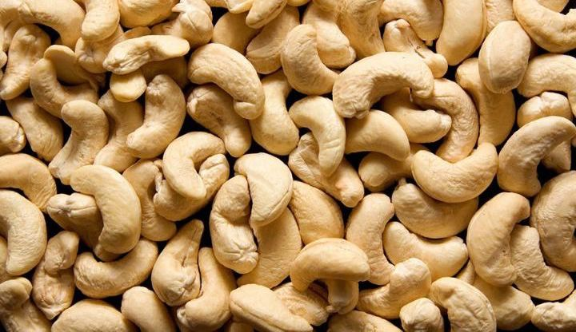
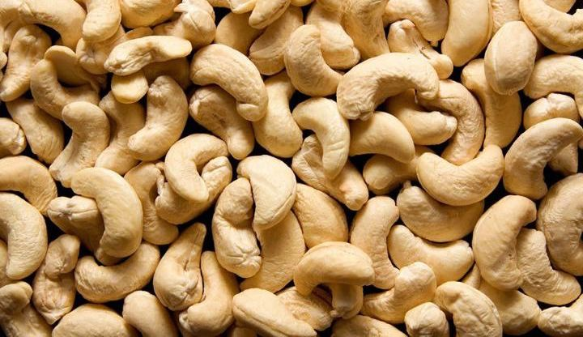

Acheter des noix de cajou ? Le plus grand assortiment en ligne de noix de cajou en Côte d'Ivoire
Acheter des noix de cajou à bas prix en ligne ? Dans notre boutique en ligne, vous trouverez le plus grand assortiment de noix de cajou de haute qualité à un prix très compétitif. Nous vendons uniquement des noix de cajou d'excellente qualité. Nous livrons aux particuliers et aux entreprises. Désormais, vous pouvez facilement acheter vos noix de cajou en ligne à un prix très compétitif.
Les noix de cajou sont une collation populaire et polyvalente qui est souvent utilisée dans la cuisine et dans différents plats et recettes. Ils sont obtenus à partir du fruit du cajouier, qui pousse sur un arbre principalement trouvé dans les pays tropicaux.
Les noix de cajou sont une excellente source d'énergie et contiennent de nombreuses vitamines, minéraux et nutriments. Ils contiennent, par exemple, beaucoup de fer, de magnésium, de potassium et de vitamine B6. De plus, ils contiennent également des graisses saines et des protéines qui contribuent à la croissance et au développement du corps.
Les noix de cajou sont souvent grillées et salées vendues en tant que collation, mais elles peuvent également être utilisées dans différents plats tels que les salades, les pâtes, les soupes et les sauces. Ils peuvent également être transformés en beurre de cajou, qui est un excellent substitut au beurre d'arachide et utilisé dans de nombreuses recettes, y compris les tartinades, les smoothies et les pâtisseries.
Noix de cajou artisanales - transformées à la main
Les noix de cajou Bacoole sont une expérience délicieuse, croquante et crémeuse au goût naturellement sucré.
Savez-vous que les noix de cajou que vous avez l'habitude d'acheter font le tour du monde avant d’arriver dans vos assiettes ? Elles voyagent de l'Afrique à l'Asie pour être transformées. Elles sont ensuite envoyées en Europe pour être consommées. Un voyage de plus de 9 mois et 25000 km à fort impact environnemental. Pendant ce trajet, les cajous ont largement le temps de perdre leur fraicheur. C'est d'ailleurs pour masquer le manque de fraicheur que les noix du commerce sont souvent grillées et salées.
Les noix de cajou Anacarde-Pro
Anacarde-Pro, nous produisons nos propres noix de cajou de manière artisanales et locales.
Nos noix de cajou ne sont pas cueillies, mais ramassées une fois à complète maturité. Nous les proposons en circuit court pour vous garantir un maximum de fraîcheur.
 
